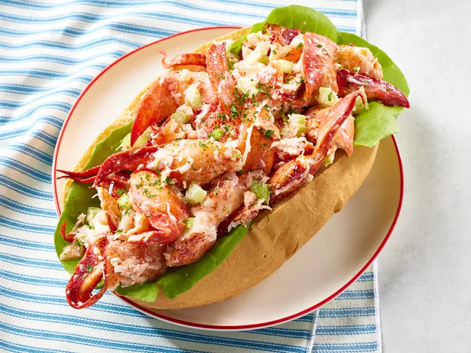

Lobster Roll

Description
A lobster roll is a sandwich filled with fresh lobster meat, typically served cold with a light mayo dressing or
warm with melted butter. Nestled in a toasted, buttery split-top bun, the tender, sweet lobster meat is complemented
by a soft yet crispy texture, delivering a rich, ocean-fresh flavor.
My note
I have tried lobster roll several times. It tastes fresh and light sweet. I am looking forward to having a better one.
Ingradients
- Lobster meat (cooked, usually claw, knuckle, and tail meat)
- Split-top hot dog buns (lightly toasted and buttered. Brioche version is better.)
- Mayonnaise (cold versions)
- Butter (for warm versions, melted)
- Lemon juice (a squeeze for flavor)
- Salt and pepper (for seasoning)
- Celery (optional, finely chopped for added crunch)
- Chives or parsley (optional, for garnish)
Steps
- Cook the lobster. Boil or steam lobster until fully cooked. Then, remove the meat from the claws,
knuckles, and tail, and chop into bite-sized pieces.
- Toast the buns. Lightly butter and toast the split-top buns in a skillet until golden and crispy.
- Prepare the lobster mixture. For a cold roll, mix lobster meat with a little mayonnaise, lemon juice, salt, and pepper.
Optionally, add finely chopped celery.
- Assemble the rolls.Fill the toasted buns with the lobster mixture.
- Enjoy your tasty lobster roll.